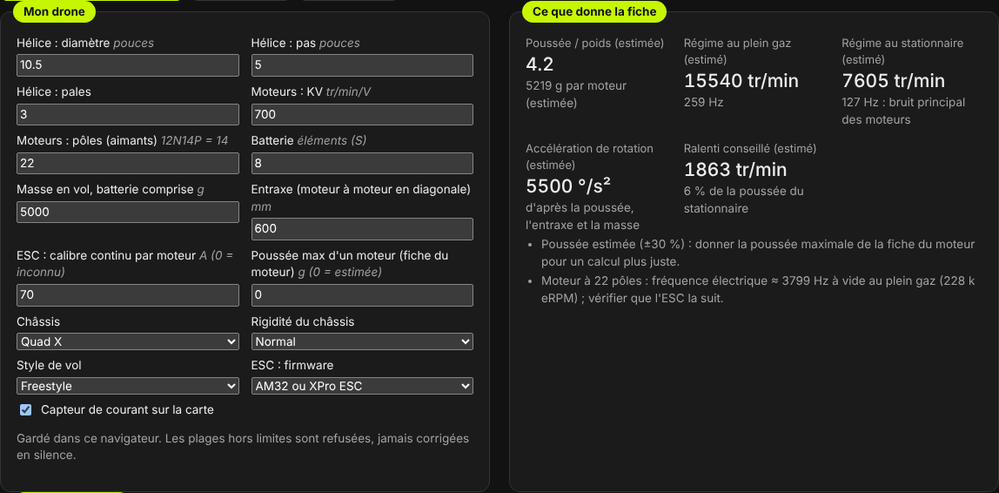
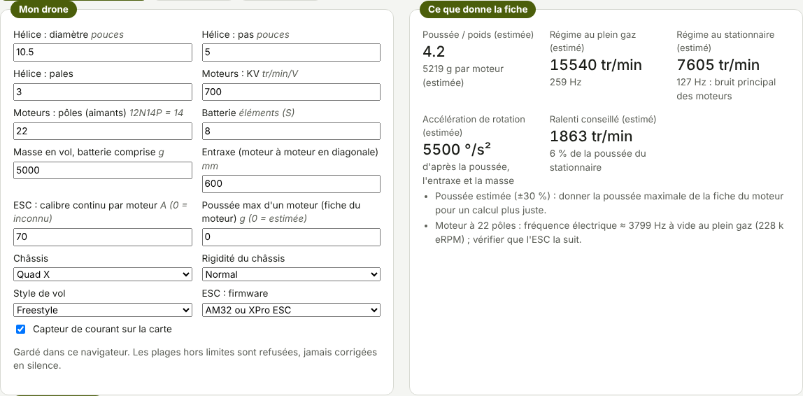
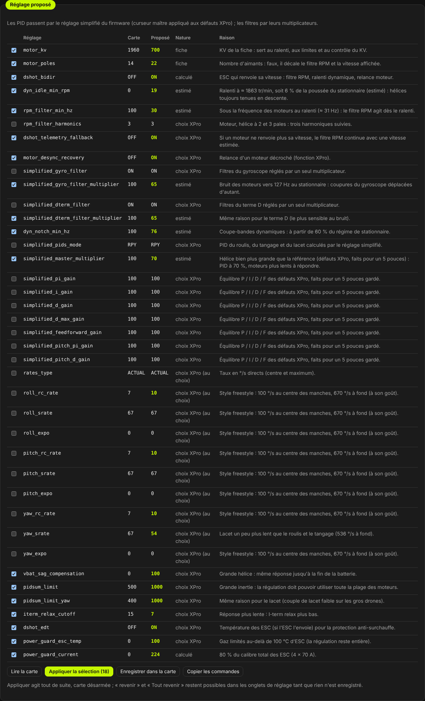
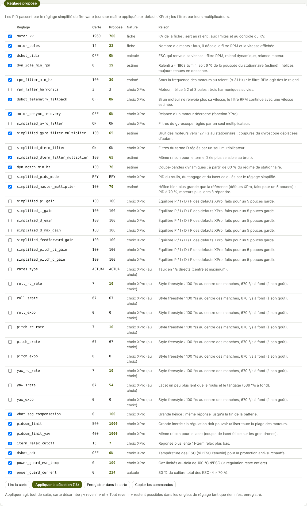
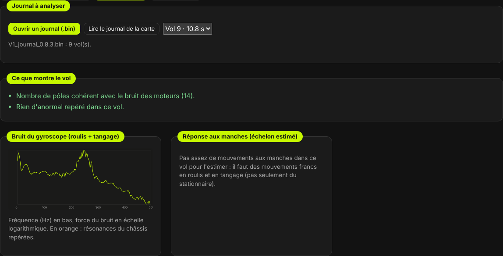
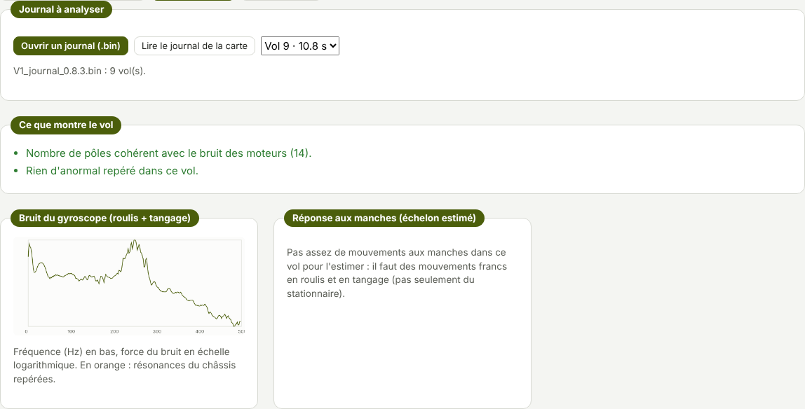

TRUEGLIDE
TRUEGLIDE Assistant de réglage
L'onglet Assistant de réglage (groupe Réglage du vol) calcule un réglage de départ à partir de la fiche du drone, l'applique à la carte, puis analyse le journal d'un vol pour proposer des corrections. Tout se calcule dans le logiciel : rien de plus n'est chargé dans la carte.
Réglages calculés pour aider, sans garantie : vérifier chaque valeur, essais hélices retirées d'abord, puis premier vol prudent. Chaque valeur dit si elle vient de la fiche, si elle est calculée, estimée, mesurée dans un vol, ou un choix de départ d'XPro.
Mon drone


On saisit l'hélice (diamètre, pas, pales), les moteurs (KV, nombre d'aimants), la batterie, la masse en vol, l'entraxe, le calibre des ESC, et si on la connaît la poussée maximale d'un moteur (fiche du moteur). Puis le châssis (Quad X, pusher, Hexa X, X8 coaxial), sa rigidité, le style de vol et le firmware des ESC. La fiche est gardée dans le navigateur. Une valeur hors limites est refusée avec la raison, jamais corrigée en silence.
À droite, ce que la fiche donne : rapport poussée / poids, régime des moteurs au plein gaz et au stationnaire (donc la fréquence du bruit principal des moteurs), ralenti conseillé. Ces chiffres sont estimés (la poussée à ±30 % tant que celle de la fiche du moteur n'est pas donnée) et marqués comme tels. L'entraxe sert à l'accélération de rotation : les taux proposés sont ramenés à ce que le drone peut suivre en 0,15 s.
Réglage proposé


- Moteurs : KV et nombre d'aimants de la fiche ; DShot bidirectionnel si l'ESC le permet (Bluejay, AM32, BLHeli_32).
- Filtre RPM et ralenti : ralenti à 6 % de la poussée du stationnaire, filtre RPM actif dès ce ralenti (fréquence minimale juste en dessous).
- Filtres : les coupures du gyroscope et du terme D suivent le régime des moteurs (plus bas pour une grande hélice, plus haut pour un petit drone), plus fort pour un châssis souple.
- PID : par le réglage simplifié du firmware, curseur maître à 80 % des défauts XPro (faits pour un 5 pouces), à 70 % pour une hélice bien plus grande. C'est un départ prudent : l'analyse du premier vol dit ensuite s'il faut monter ou baisser.
- Grandes hélices (9 pouces et plus) : réponse constante jusqu'à la fin de la batterie
(
vbat_sag_compensation), toute la plage des moteurs pour la régulation, I-term relax plus bas. - Protections : anti-surchauffe à 100 °C d'ESC, relance d'un moteur décroché, télémétrie de secours, limite de courant à 80 % du calibre total des ESC (avec un capteur de courant).
- Taux selon le style de vol : proposés décochés, car c'est une affaire de goût.
Lire la carte remplit la colonne Carte. Appliquer la sélection envoie les lignes cochées (carte désarmée) : elles agissent tout de suite mais ne restent qu'après Enregistrer dans la carte ; d'ici là, « revenir » reste possible dans les onglets de réglage. Copier les commandes donne les mêmes lignes pour la ligne de commande. Un réglage que la carte refuse est affiché avec la raison.
Analyser un vol


Ouvrir un journal (.bin) ou lire celui de la carte, choisir le vol (le plus long est pris d'abord). Pour une analyse utile : 20 s de vol au moins, avec des changements de gaz et des mouvements francs aux manches. L'analyse donne :
- Résonance du châssis : une vibration qui garde la même fréquence quel que soit le régime des moteurs (au moins 6 s de vol, régimes différents d'au moins 25 %). Un coupe-bande fixe est proposé, à poser seulement si un deuxième vol la retrouve. C'est le point délicat des grands drones.
- Nombre de pôles : le bruit des moteurs doit tomber sur leur vitesse ; sinon
motor_polesest faux et la bonne valeur est proposée. - Saturation : part du temps où un moteur est au maximum.
- Décrochage d'un moteur et télémétrie figée.
- Oscillation lente (2 à 25 Hz), signalée seulement au-delà d'un demi-degré.
- Réponse aux manches : réponse à un échelon estimée en roulis et en tangage, temps de montée et dépassement, avec le conseil qui va avec.
Le bruit des moteurs au-dessus de 500 Hz se replie dans le journal (1 000 mesures par seconde) : l'analyse en tient compte et ne le prend pas pour une résonance.
Contrôle du KV
Hélices retirées, batterie branchée, drone désarmé : Lancer le contrôle fait tourner les 4 moteurs à
20 % pendant 3 s, puis compare la vitesse mesurée au KV saisi (motor_kv) : KV estimé ≈ tr/min ÷
(tension × 0,20). Seul un écart net (plus de 30 %) est signalé ; la page ne change jamais motor_kv.